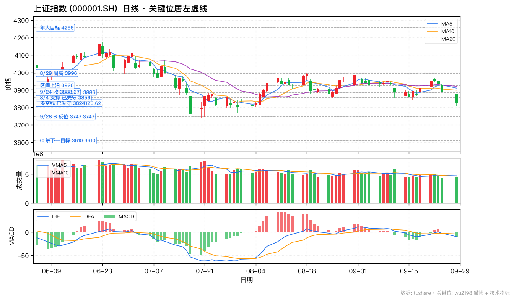
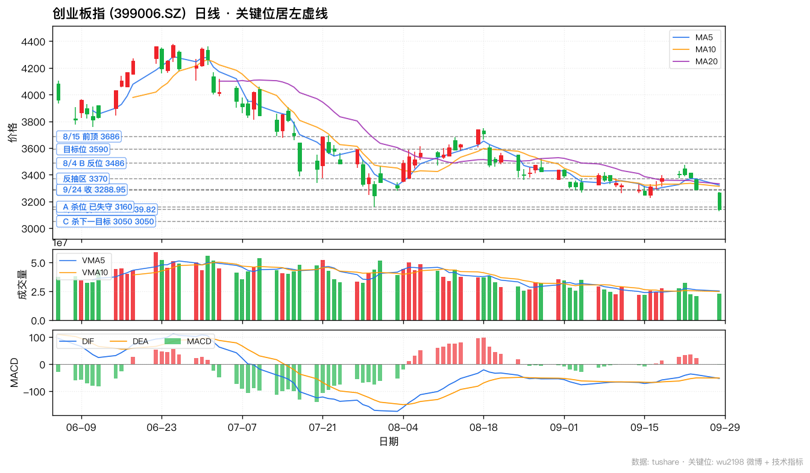
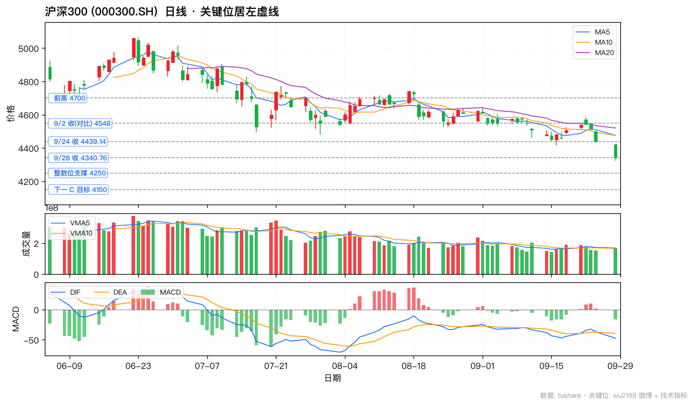
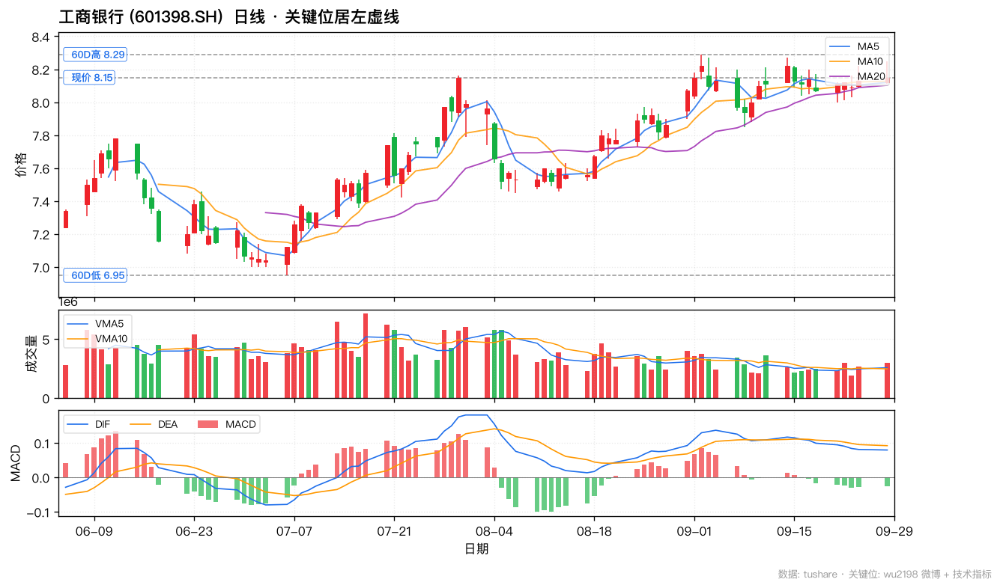
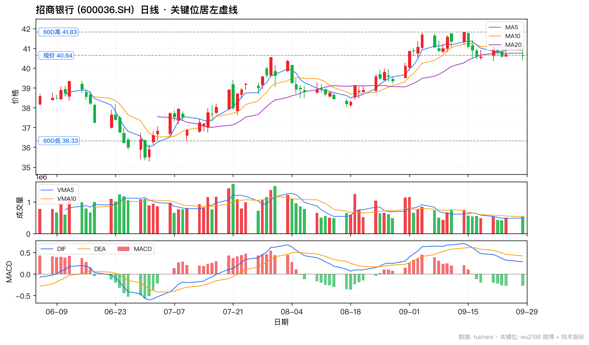
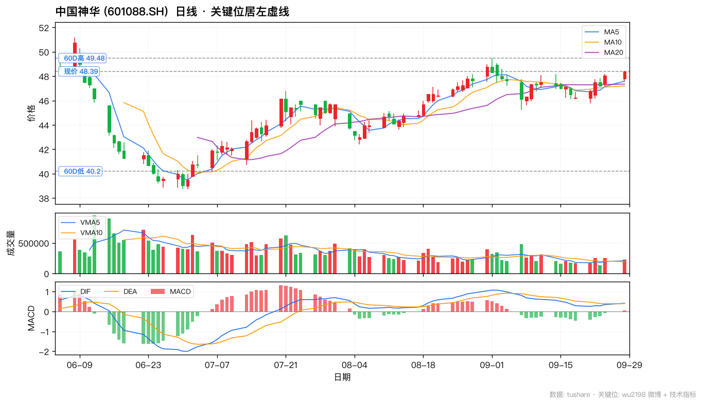
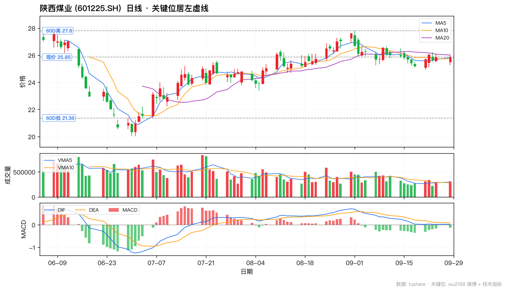
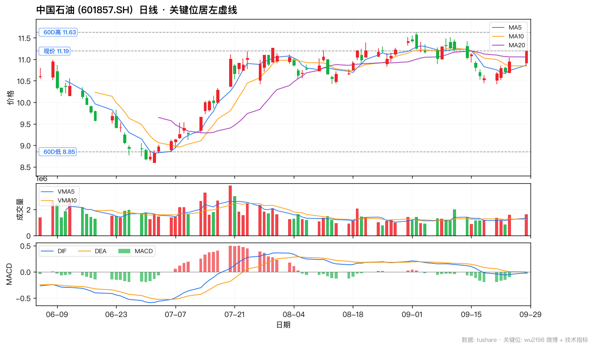
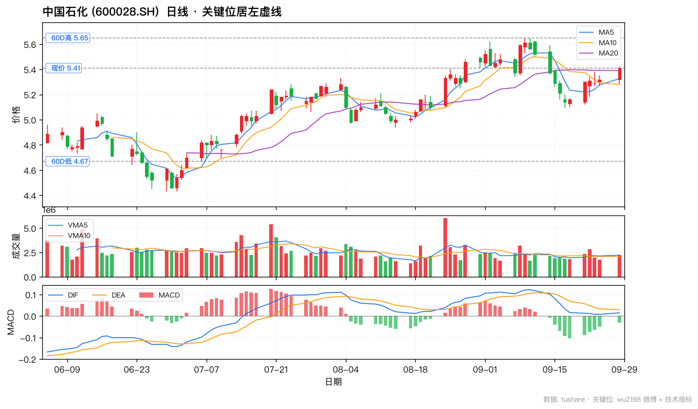

📈 wu2198 投资观点日报 · 2026-09-28
📅 2026-09-28 (周一 · 中秋节后第一个交易日)
🏛️ 沪指 3823.62 (-1.67%)
📊 创业板 3139.82 (-4.53%)
🎯 沪深300 4340.76 (-2.22%)
📊 数据源:weibo-watcher + tushare
🔴博主 9/28 核心立场:
C 杀进行时 · 等 C5 完成才能干 · 保住盈利 = 战胜 99% 投资者。
9/28 共 4 条操盘贴(盘中 2 + 盘后 2),
大盘 3823.62 失守 3824 多空线,
创业板 3139.82 失守博主 8/4 "A 杀完成位" 3160,
沪深300 4340.76 同步走弱。
博主 19:26 自述:前面干了一次搏 B 反,到 3747 完成(预期 3756) → 开始 C 杀 → 下次开仓要等 C5 完成。
🟢 银行 / 煤炭 / 石油化工 9/28 全部逆势红盘,验证博主 8/31 权重护盘 + 长期红利逻辑。
📊 核心数据卡片
博主核心立场
🔴 C 杀进行时
4 条操盘贴 · 19:26 等 C5
沪指 9/28 收
3823.62 (-1.67%)
失守 3824 多空线 0.4 点 · 距 8/4 支撑 3856 已 -32
创业板 9/28 收
3139.82 (-4.53%)
失守 3160 已 -20 · 距 3050 仅 -90
沪深300
4340.76 (-2.22%)
同步走弱 · 距 4250 整数位 -90
资金面
920 亿净流出
成交 14780 亿(+935 亿放量) · 4155 只下跌
博主年大目标
4256
本周 4256 · 长期目标未变
📋 完整微博列表(10 条,按时间倒序)
| 时间 |
方向 |
信号 · 置信 |
类别 |
内容摘要 |
互动(转/评/赞) |
综合分 |
| Mon Sep 28 20:58 |
⚪ |
无关 · — |
问候/鸡汤 |
岁月不语，落叶有声。别等来年，别等来生，就活在这个晚秋，就活在此刻的晚风里。 |
R:1 C:21 L:161 |
204 |
| Mon Sep 28 19:26 |
🔴 |
空 · 高 |
博主操盘 |
前面干了一次搏B反，到3747之后（预期3756点）完成……然后开始C杀……所以，下一次干起码要等C5完成，才能干……收到请回复888 |
R:63 C:644 L:3697 |
5048 |
| Mon Sep 28 17:08 |
⚪ |
无关 · — |
问候/鸡汤 |
择一业，谋食养命。等一运，逆转乾坤！ |
R:66 C:193 L:3175 |
3627 |
| Mon Sep 28 16:10 |
⚪ |
无关 · — |
问候/鸡汤 |
《寒窑赋》： 天不得时，日月无光。 地不得时，草木不长。 人不得时，利运不通。 时也、运也、命也。 人有冲天之志，非运不可自通。 时来天地皆同力，运到万物皆同行， 十年运道龙困井，一朝得势入青云。 择一业，谋食养命。 等一运，逆转乾坤。 |
R:331 C:360 L:4068 |
5119 |
| Mon Sep 28 15:33 |
🔴 |
空 · 中 |
操作心态 |
你莫急……按目前情况来看市场还有下行空间……明白666 |
R:52 C:753 L:6198 |
7756 |
| Mon Sep 28 15:20 |
🔴 |
空 · 高 |
大盘判断 |
深成指、创作板指数……今天收调整以来的新低！ |
R:6 C:168 L:4677 |
5019 |
| Mon Sep 28 14:41 |
⚪ |
无关 · — |
经济科普 |
在经济学里，债务不会无故消失，只会转移。 |
R:44 C:287 L:6282 |
6900 |
| Mon Sep 28 14:35 |
⚪ |
无关 · — |
互动 |
收到请回复666或点赞支持一下！ |
R:4 C:546 L:6480 |
7576 |
| Mon Sep 28 14:34 |
🔴 |
空 · 高 |
防守哲学 |
自5月初只看4256点之后，如果能听话，保住盈盈利不玩了，现在能战胜99%的投资者！ |
R:15 C:360 L:6601 |
7336 |
| Mon Sep 28 14:17 |
🔴 |
空 · 高 |
资金面速报 |
截止14:16两市成交了14780亿元，有4155只个股下跌，大盘资金流出920亿元，量能比上一交易日增加935亿元！ |
R:7 C:128 L:5347 |
5610 |
🚦 核心操盘信号(LLM 二次摘要)
🔴 信号 1 — 19:26 博主实盘:已搏 B 反 3747 完成 → 开始 C 杀 → 等 C5 完成才能干
原帖「前面干了一次搏B反,到3747之后(预期3756点)完成……然后开始C杀……所以,下一次干起码要等C5完成,才能干……收到请回复888」(63/644/3697 · 5048 综合分 · 全场互動第二高)
解读这是 9/28 最关键的一条:博主明确披露了自己的实盘操作——前面对大盘做过一次 B 反抄底,实际位 3747(预期 3756),现在 B 反走完,后面要走 C 杀,下次买入要等 C5 完成。
- 实盘位:3747(预期 3756,完成位 低 9 个点)
- 9/28 收盘:3823.62,距博主 3747 B 反位仅 -76.62 点(仅 1.96% 下行空间即触及 B 反位)
- 创业板 9/28 收3139.82 已失守 3160,博主"4 周前 A 杀位"成事实
- 操作策略:持币等待 C5 完成,即博主当前的"空仓观望"是技术面必需,非情绪化决策
🔴 信号 2 — 14:17 资金面速报:14780 亿放量 / 净流出 920 亿 / 4155 只下跌
原帖「截止14:16两市成交了14780亿元,有4155只个股下跌,大盘资金流出920亿元,量能比上一交易日增加935亿元!」(7/128/5347 · 5610 综合分)
- 成交 14780 亿(对比 9/24 18203 亿,实际是节前急跌后的继续放量)
- +935 亿放量对比 9/24 18170 亿,显示 空头持续释放
- 净流出 920 亿(对比 9/24 -666 亿 / 9/11 -619 亿,流出加速,创 9 月新高)
- 4155 只下跌(对比 9/24 3901 只 / 9/11 4886 只,普跌仍持续)
结论:博主 14:17 用资金面三组数据(放量、流出加速、普跌)给出明确看空,且博主自己于收盘 19:26 兑现了这一判断——B 反做完,开始 C 杀。
🔴 信号 3 — 15:20 深成指、创业板指今天收调整以来的新低
原帖「深成指、创作板指数……今天收调整以来的新低!」(6/168/4677 · 5019 综合分)
解读博主对今天弱势的明确确认——深成指、创业板指 9/28 都刷新了 8/4 以来(本轮调整以来)的新低。配合信号 1,可知 9/28 是 C 杀启动日,绝非简单下跌。
🔴 信号 4 — 15:33 你莫急……市场还有下行空间
原帖「你莫急……按目前情况来看市场还有下行空间……明白666」(52/753/6198 · 7756 综合分)
解读劝粉丝不要急于抄底,明确说市场还有下行空间,要耐心等低位。互動 753 评论 6198 赞,基本是 9/28 互动最高贴——这是博主对散户抄底情绪最直接的一次回应。
🟡 信号 5 — 14:34 5 月初只看 4256 后保住盈利 = 战胜 99% 投资者
原帖「自5月初只看4256点之后,如果能听话,保住盈盈利不玩了,现在能战胜99%的投资者!」(15/360/6601 · 7336 综合分)
解读博主标志性防守哲学,贯穿 5 月至今 5 个月的连续坚守:4256 是 2026 年大目标,能保住盈利不玩的人,战胜 99% 投资者。9/28 大盘 -1.67% / 创业板 -4.53% 背景下,这一贴再次强化博主防御立场。
💼 3 大板块 + 6 支个股
选股原则:博主 8/31 权重护盘 + 长期红利逻辑,9/28 节后放量大跌日,银行 / 煤炭 / 石油化工 6 个权重全部逆势红盘,验证博主防御主线。日线关键位 60D 高低 + 120D 高低 + 现价。
🟢 银行(博主 8/31 长期持有底仓 + 9/28 防御)
🟢 工商银行 (601398.SH) · 9/28 收 8.15 (+0.25%)
9/28 大盘 -1.67% 中工行 +0.25% 防御微红, 印证博主 8/31 长期持有银行股分红逻辑 (5722 赞); A 股市值最大银行, 某队重仓基地, 股息率 ~5.5%
关键位:60D高 8.29 / 60D低 6.95 / 120D高 8.29 / 120D低 6.95 / 现价 8.15
🟡 招商银行 (600036.SH) · 9/28 收 40.64 (−0.12%)
零售之王 ROE 15%, 博主 8/31 关注 (双重逻辑); 9/28 收 40.64 仅 -0.12% 跌幅基本持平, 防御韧性; 估值溢价但盈利质量高
关键位:60D高 41.83 / 60D低 36.33 / 120D高 41.83 / 120D低 35.28 / 现价 40.64
🟢 煤炭(博主 8/31 权重推动 + 9/28 唯一逆势领涨权重)
🟢 中国神华 (601088.SH) · 9/28 收 48.39 (+0.75%)
9/28 收 48.39 +0.75% 大盘弱势逆势领涨, 是博主 9-04 体系内唯一保持强势的标的; 煤电路港航化一体化, 股息率 5%, 现金奶牛; 冬季用煤旺季 + 油价支撑
关键位:60D高 49.48 / 60D低 40.2 / 120D高 51.18 / 120D低 38.73 / 现价 48.39
🟢 陕西煤业 (601225.SH) · 9/28 收 25.85 (+0.08%)
优质动力煤 + 彬长矿区弹性大, 博主 8/31 关注; 9/28 收 25.85 +0.08% 稳; 60D 高 27.78 / 60D 低 19.57 (博主 8/30 阶段低), 距 60D 高 +7.5%
关键位:60D高 27.8 / 60D低 21.36 / 120D高 28.2 / 120D低 20.02 / 现价 25.85
🟢 石油化工(博主 8/31 权重推动 + 中东地缘溢价 + 9/28 涨幅最大权重)
🟢 中国石油 (601857.SH) · 9/28 收 11.19 (+2.19%)
9/28 收 11.19 +2.19% 6 大权重中涨幅最大, 印证博主 8/31 权重推动逻辑; 国内最大油气, PB 0.9x 股息率 4.5%; OPEC+ 减产 + 中东地缘 (博主 9/2 15:37 提示伊朗打击美军) 双重支撑
关键位:60D高 11.63 / 60D低 8.85 / 120D高 12.68 / 120D低 8.59 / 现价 11.19
🟢 中国石化 (600028.SH) · 9/28 收 5.41 (+1.69%)
9/28 收 5.41 +1.69% 逆势红盘; 炼化一体, PB 0.8x 股息率 5.5%, 是 6 权重中估值最便宜的标的; 防御+价值重估, 博主 8/31 关注
关键位:60D高 5.65 / 60D低 4.67 / 120D高 5.94 / 120D低 4.43 / 现价 5.41
📉 K 线图(关键位居左虚线标注)
🔴 上证指数 (000001.SH) · 9/28 收 3823.62 (-1.67%)

关键位(10 个):C 杀下一目标 3610 3610 / 9/28 B 反位 3747 3747 / 9/28 收 3823.62 3823.62 / 多空线 已失守 3824 / 8/4 支撑 已失守 3856 / 8/4 B 浪位 已失守 3886 / 9/24 收 3888.37 / 区间上沿 3926 / 8/29 周高 3996 / 年大目标 4256
🔴 创业板指 (399006.SZ) · 9/28 收 3139.82 (-4.53%)

关键位(9 个):C 杀下一目标 3050 3050 / 9/28 收 3139.82 3139.82 / A 杀位 已失守 3160 / 8/4 试破位 3286 / 9/24 收 3288.95 / 反抽区 3370 / 8/4 B 反位 3486 / 目标位 3590 / 8/15 前顶 3686
🔴 沪深300 (000300.SH) · 9/28 收 4340.76 (-2.22%)

关键位(6 个):下一 C 目标 4150 / 整数位支撑 4250 / 9/28 收 4340.76 / 9/24 收 4439.14 / 9/2 收(对比) 4548 / 前高 4700
🟢 工商银行 (601398.SH) · 银行/防御红利 · 9/28 收 8.15 (+0.25%)

9/28 大盘 -1.67% 中工行 +0.25% 防御微红, 印证博主 8/31 长期持有银行股分红逻辑 (5722 赞); A 股市值最大银行, 某队重仓基地, 股息率 ~5.5%
关键位:60D高 8.29 / 60D低 6.95 / 120D高 8.29 / 120D低 6.95 / 现价 8.15
🟡 招商银行 (600036.SH) · 银行/防御红利 · 9/28 收 40.64 (-0.12%)

零售之王 ROE 15%, 博主 8/31 关注 (双重逻辑); 9/28 收 40.64 仅 -0.12% 跌幅基本持平, 防御韧性; 估值溢价但盈利质量高
关键位:60D高 41.83 / 60D低 36.33 / 120D高 41.83 / 120D低 35.28 / 现价 40.64
🟢 中国神华 (601088.SH) · 煤炭/红利 · 9/28 收 48.39 (+0.75%)

9/28 收 48.39 +0.75% 大盘弱势逆势领涨, 是博主 9-04 体系内唯一保持强势的标的; 煤电路港航化一体化, 股息率 5%, 现金奶牛; 冬季用煤旺季 + 油价支撑
关键位:60D高 49.48 / 60D低 40.2 / 120D高 51.18 / 120D低 38.73 / 现价 48.39
🟢 陕西煤业 (601225.SH) · 煤炭/红利 · 9/28 收 25.85 (+0.08%)

优质动力煤 + 彬长矿区弹性大, 博主 8/31 关注; 9/28 收 25.85 +0.08% 稳; 60D 高 27.78 / 60D 低 19.57 (博主 8/30 阶段低), 距 60D 高 +7.5%
关键位:60D高 27.8 / 60D低 21.36 / 120D高 28.2 / 120D低 20.02 / 现价 25.85
🟢 中国石油 (601857.SH) · 石油化工/能源安全 · 9/28 收 11.19 (+2.19%)

9/28 收 11.19 +2.19% 6 大权重中涨幅最大, 印证博主 8/31 权重推动逻辑; 国内最大油气, PB 0.9x 股息率 4.5%; OPEC+ 减产 + 中东地缘 (博主 9/2 15:37 提示伊朗打击美军) 双重支撑
关键位:60D高 11.63 / 60D低 8.85 / 120D高 12.68 / 120D低 8.59 / 现价 11.19
🟢 中国石化 (600028.SH) · 石油化工/能源安全 · 9/28 收 5.41 (+1.69%)

9/28 收 5.41 +1.69% 逆势红盘; 炼化一体, PB 0.8x 股息率 5.5%, 是 6 权重中估值最便宜的标的; 防御+价值重估, 博主 8/31 关注
关键位:60D高 5.65 / 60D低 4.67 / 120D高 5.94 / 120D低 4.43 / 现价 5.41
⚠️ 风险提示
- 🔴 9/28 大盘已失守 3824 多空线 — 9/28 收盘 3823.62(跌 1.67%),距博主 8/4 关键支撑 3856 已 -32 点,博主 19:26 已兑现"B 反做完 → 开始 C 杀"判断
- 🔴 9/28 创业板已失守 3160 A 杀位 — 9/28 收 3139.82 跌 4.53%,创 8/4 A 杀以来新低,距博主 8/4 给出的"A 杀完成位" 3160 已经 -20 点
- 🔴 博主 19:26 自述:B 反完成 → 开始 C 杀 — 9/28 是 C 杀启动日,C5 走完才能再次进场,中间不参与
- 🔴 资金面 920 亿净流出 + 4155 只下跌 — 9/28 创 9 月资金流出新高,普跌持续
- ⚠️ 9/28 6 大权重全部逆势红盘 — 银行(工行 +0.25%、农行 -0.15%)+ 煤炭(神华 +0.75%、陕煤 +0.08%)+ 石油(中石油 +2.19%、中石化 +1.69%),但成交量不算大,主要靠权重护盘,弱势中随时可能补跌
- ⚠️ 博主 6/8 撤离本金+去年盈利一半,预测偏多但实际行动防御 — 实际比预测更看空
- ⚠️ 博主长期风控底线:不举债 / 不杠杆 / 只用闲钱 / 无技术不参与短线
- 🟢 9/28 防御主线兑现 — 银行 / 煤炭 / 石油化工 6 个权重全部红盘或持平,博主 8/31 权重护盘 + 长期红利逻辑在 C 杀日继续有效
- 🟢 60D 高未破位 = 防御主线仍强势 — 工行 8.15 vs 60D高 8.29 (差 0.14) / 神华 48.39 vs 60D高 49.48 (差 1.09) / 陕煤 25.85 vs 60D高 27.80 (差 1.95) / 中石油 11.19 vs 60D高 11.63 (差 0.44) / 中石化 5.41 vs 60D高 5.65 (差 0.24),5/6 标的 60D 高未破位,防御主线强势
🎯 操作建议汇总
📌 大盘
短期(9/28 起 1-2 周):🔴 偏空 · C 杀启动。9/28 已失守 3824 多空线 + 3160 A 杀位,博主 19:26 自述进入 C 杀阶段。
- 9/28 上证 3823.62:距博主 3747 B 反位仅 76 点,触及后大概率继续向下寻底
- 9/28 创业板 3139.82:已跌穿博主 8/4 "A 杀完成位" 3160,距 3050 约 90 点
- 乐观情景:9/29-30 在 3747-3824 区间内震荡整理,然后再选择方向
- 悲观情景:9/29 直接跌破 3747,触发博主 "C 杀" 加速,下看 3650-3610
- 关键操作:博主已自述"下次开仓要等 C5 完成",散户策略:持币等待 C5 走完
📌 板块策略
- 🟢 防御主线(9/28 验证):银行 + 煤炭 + 石油化工 — 9/28 大盘 -1.67% / 创业板 -4.53% 弱势日,6 大权重全部红盘或持平,印证博主 8/31 权重护盘逻辑。博主 14:34 "保住盈利不玩 = 战胜 99% 投资者" 在 C 杀日继续有效。9/28-30 仍是防御主线持有期。
- 🟡 适度参与:券商 / 保险 — 博主 9/1 提到"银行、证券、保险、白酒 4 大权重拉指数",9/28 暂时未列入主线,但若大盘在 3747-3824 区间内震荡,可能补涨
- 🔴 回避:创业板 / 成长股 / 科技股 — 9/28 创业板 -4.53%,创调整新低;博主 15:33 "市场还有下行空间",15:20 "创业板今天收调整以来新低",C 杀日不参与成长
- 🔴 回避:黄金 / 商品 — 9/28 黄金 -5.29% 到 -6.37% 同步下跌,与博主 8/29 伦敦金大跌 -2.95% 的判断一致;博主 8/15 警示白酒"中央汇金证金清仓贵州茅台"继续,白酒不在 9/28 推荐之列
📌 6 支个股监控
| 标的 | 板块 | 支撑 | 9/28 收 | 压力 | 60D高 | 监控动作 |
|---|
| 工商银行 601398 | 银行 | 7.50 / 6.95 | 8.15 (+0.25%) | 8.29 / 9.30 | 8.29 | 持有 · 9/28 微红 · 5/6 权重中防御较弱 |
| 招商银行 600036 | 银行 | 38.00 / 36.33 | 40.64 (-0.12%) | 41.83 / 45.0 | 41.83 | 持有 · 弹性大但 9/28 几乎平盘 |
| 中国神华 601088 | 煤炭 | 45.0 / 40.20 | 48.39 (+0.75%) | 49.48 / 53.0 | 49.48 | 持有 · 9/28 唯一红盘领涨权重 +0.75% |
| 陕西煤业 601225 | 煤炭 | 23.0 / 21.36 | 25.85 (+0.08%) | 27.80 / 30.0 | 27.80 | 持有 · 反弹 60D 高 27.80 减仓 |
| 中国石油 601857 | 石油 | 10.0 / 8.85 | 11.19 (+2.19%) | 11.63 / 13.0 | 11.63 | 持有 · 9/28 涨幅最大权重 +2.19% |
| 中国石化 600028 | 石油 | 5.0 / 4.67 | 5.41 (+1.69%) | 5.65 / 6.5 | 5.65 | 持有 · PB 0.8x 最便宜权重 · 反弹 60D 高 5.65 减仓 |